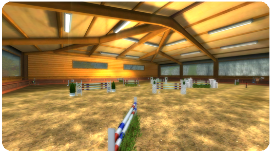
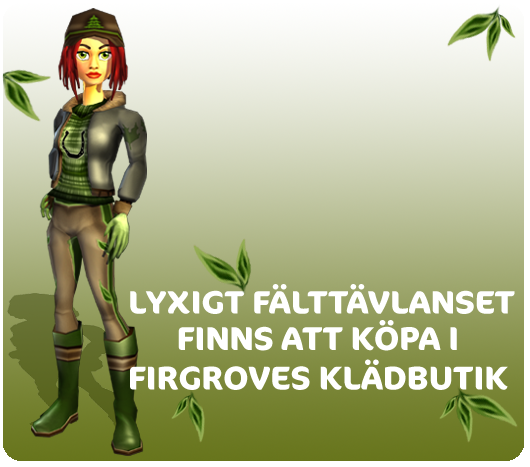

Hejsan!
Här kommer veckans uppdateringar!
Hopptävlingar:
Nu finns flera roliga hopptävlingar i ridhus B för de som avslutat vissa uppdrag och är på level 9 eller högre!
Dessa kan du tävla i själv eller mot dina kompisar i grupp!

Nya kläder:
Kläder-Deluxe, perfekta att samla på!
Nu finns ytterligare ett deluxe-klädset tillgängligt! Den här gången kan du köpa det i Firegroves klädbutik och det är ett lyxigt fälttävlanset! Alla deluxe-set går bara att handla för Star Coins och de har nu fått orangefärgade ikoner så att du lättare hittar dem i din ryggsäck eller i ditt stall.

Vi fortsätter arbetet med att göra Star Stable ännu bättre!
Vänliga hälsningar: